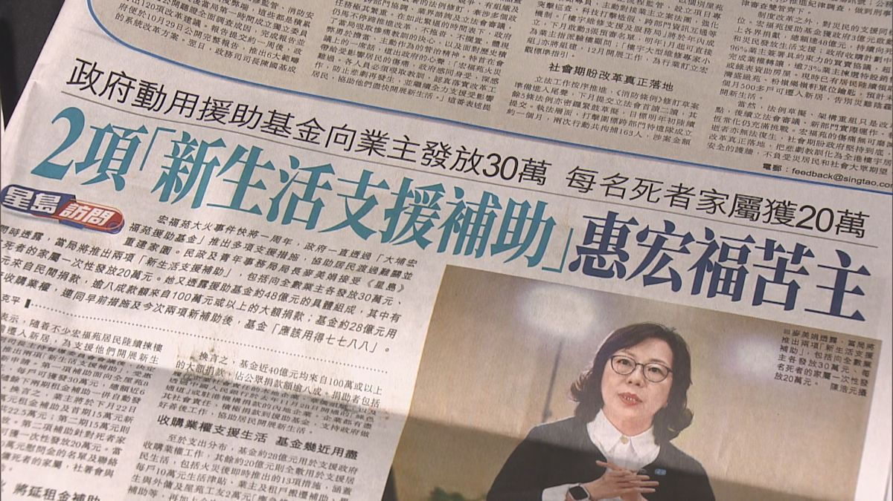
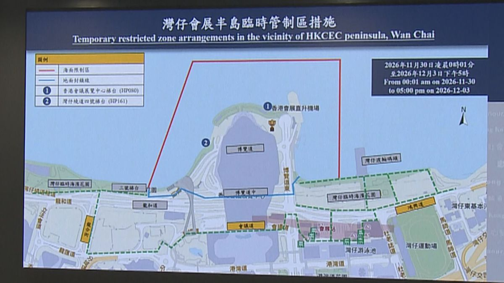
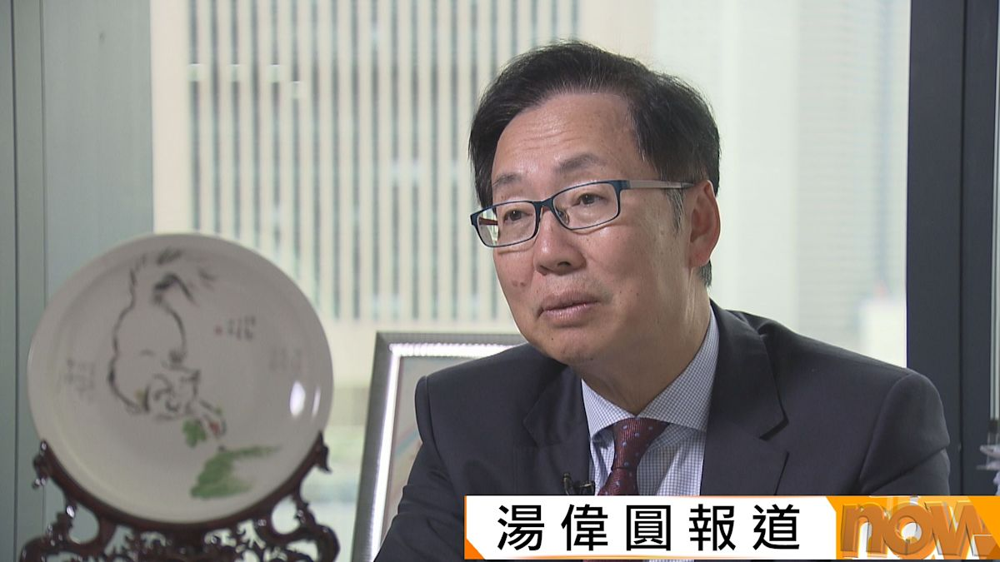
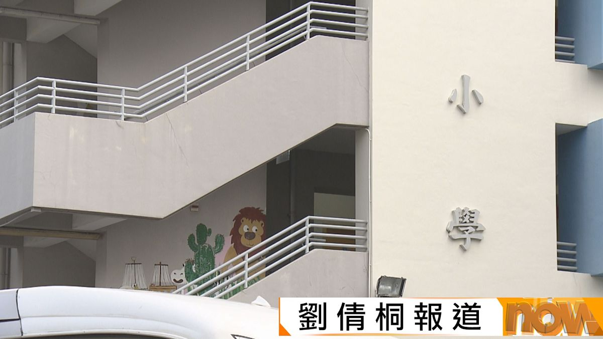
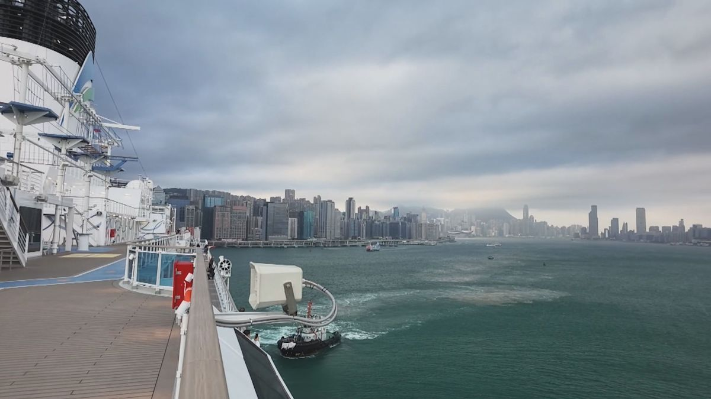
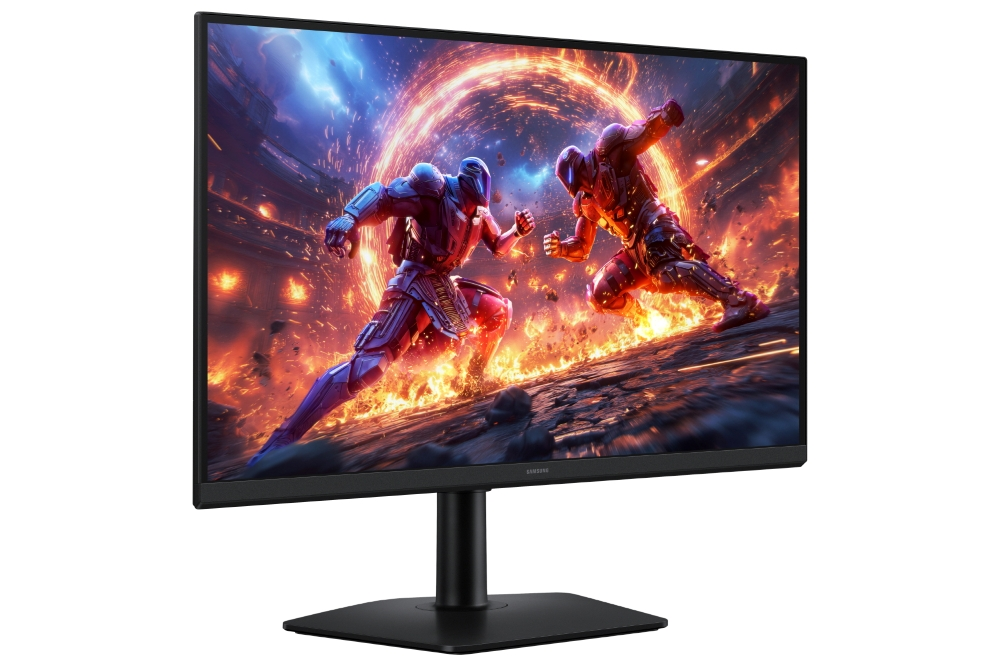
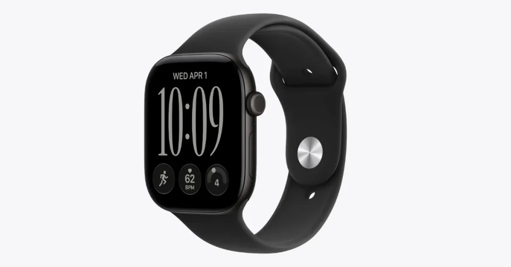

黃仁勳閃電復職帶動美股及亞股強勁反彈，納指急升 6.5%，英偉達單日飆逾三成；本港方面，宏福苑加推補助、圍標集團再被瓦解，兩電明日公布電費檢討。
NVIDIA 董事會一致投票通過，黃仁勳即時復職總裁兼 CEO 並再次出任董事會成員；董事會稱對他的坦誠和領導能力感到滿意，相信復職最符合股東、員工及客戶利益。臨時 CEO Colette Kress 繼續擔任財務總監。

📰宏福苑大火將近一周年，民青局局長麥美娟透露推出兩項新生活支援補助：業主每戶加推 30 萬元，每名死者家屬一次性獲發 20 萬元，兩項措施涉 6.3 億元；援助基金總額約 48 億元，連同今次補助差不多用盡。
打擊樓宇維修工程圍標聯合特遣隊展開第二輪行動，再瓦解一個圍標集團，涉及 15 個屋苑、工程合約總額逾 1.3 億元，拘捕 33 人，部分有黑社會背景；11 間承建商、4 間工程公司及 6 名業主立案法團成員涉案。
尖沙咀寶勒巷周日發生致命交通意外，警方以危險駕駛導致他人死亡等多項罪名起訴涉案司機，案件周二上午於九龍城裁判法院提堂；巴基斯坦協會證實死者是協會成員，在協會服務逾 10 年。
兩電明日公布周年電費檢討結果；受國際油價波動影響，中電及港燈燃料費現時已較年初升逾兩成及五成，中電撥款 2.5 億元、港燈撥款 7,800 萬元支援基層及中小企。

📰國際刑警組織全體大會下周一至四在灣仔會展舉行，期間實施海陸空管制，金紫荊廣場及會展對出海濱花園封閉，全港劃為禁飛區，無人機、風箏、汽球及滑翔傘一律禁飛。

📰政府委任陳健波為醫管局主席，接替范鴻齡，任期下月 1 日起生效，為期兩年；陳健波曾任立法會保險界議員 17 年，履職前將辭任市建局及香港中大醫院董事，上任後重點以科技減低文書程序、加快專科輪候。

📰小一自行分配學位公布結果，約 3.2 萬人申請、約 1.8 萬人獲派學位，成功率逾 56%；申請人數按年跌近一成半，但教育界指適齡學童減少反而加劇名校競爭，建議放寬公營小學招收非本地生限制。
選委會選舉周日結束，1,500 名選委明年 2 月 1 日上任；工聯會贏得 79 席，比上屆多 3 席，民建聯贏得逾百席，知名度高的候選者包括楊偉添、湯文龍及陳家強落敗。
聯合國氣候變化大會 COP31 未能達成重大協議，談判破裂收場，是 2009 年後再度破局；歐盟等國不滿協議草案未提及擺脫化石燃料的過渡方案，中方呼籲各方合作、不應喪失對多邊進程信心。
印尼萬丹省一間糖果廠上周六傍晚發生大火，至少 24 人死亡、約 30 人失蹤；初步報告顯示火警可能由冷氣機短路引起，遺體因火勢猛烈無法肉眼辨認，當局正收集家屬 DNA 樣本鑑證。

📰第二艘國產郵輪「愛達·花城號」展開商業首航，載約 3,800 名乘客由南沙抵港，靠泊啟德郵輪碼頭；明年將有近 20 個航次抵港，船方邀請旅客順道品嚐香港地道美食。
明日攪珠的六合彩「幸運二」金多寶將試行「集氣加碼制」，投注額愈高、金多寶金額相應遞增，馬會以今日下午 2 時累積投注額作準分三級跳升，估計頭獎最高 8,000 萬港元。
房屋局宣布「公營房屋樓宇管制組」正式成立，落實樓宇維修制度改革的 29 項優化方案，取代原有獨立審查組，支援 5 個屋苑進行大維修；特首李家超聽取改革進度報告，要求確保所有改革取得實效。
美股三大指數周一全線大幅反彈，英偉達董事會重新起用黃仁勳出任 CEO，股價急升 31.5%；道指升 1,447.98 點報 49,595.31 點，標指升 4.73%，納指升 6.5%。
太古以每股 14.23 元配售約 2.52 億股國泰航空股份，較收市價折讓約 8.5%，套現約 35.95 億元；太古稱無意再出售國泰股份，所得款項用作一般營運資金。
先通醫藥最終發售價每股 52 元，為招股價範圍下限，公開發售超額認購約 5,227.77 倍，約 12.9 萬人申請，無人穩獲一手；輝立暗盤收報 49.32 元，較定價跌 5.2%。
受隔夜美股大升提振，日經指數開市後升幅擴至 2.7%，韓國 KOSPI 漲幅擴至逾 5.6%，韓交所啟動 SIDECAR 機制暫停程式化買盤 5 分鐘；三星電子漲 9%，SK 海力士漲 10.5%。
恒指昨日收報 22,383 點，跌 27 點或 0.1%，盤中一度跌穿 22,000 關口；北水全日淨流出 96.27 億元，淨買入最多為阿里、美團及建行，淨賣出最多為盈富基金。
恒指公司公布季度檢討結果，科指成分股將由 30 隻增至 50 隻，20 家公司加入，變動 12 月 4 日收市後實施、12 月 7 日生效；料帶動被動追蹤產品調整約 12% 持倉。
德勤料港府本財年續錄盈餘，估算升至約 208 億元；全球首隻離岸人民幣債券 ETF 今日在港掛牌，財庫局局長許正宇稱可滿足國際投資者多元配置需求。
今年第三季以永久離開香港為由提早提取強積金的申索 6,300 宗，按年減少 8.7%，涉及金額 15.34 億元，按年減少 7.6%。
Anthropic 上市鐘聲竟成 AI 股長牛市喪鐘，納指 100 單日暴跌 5.6%、一周跌 10.4%，創疫情以來最差表現，較 10 月高點回落 20% 進入技術性熊市；英偉達單日重挫 14%，VIX 衝上 40。
伯恩斯坦壓力測試假設甲骨文全部 AI 數據中心業務收入歸零、硬件資產無法變現，合理股價仍達 133 美元，較收市價高 31.4%；該行認為市場對甲骨文 AI 基建投資風險定價過於悲觀，重申「跑贏大盤」評級。
人民幣兌美元即期匯率收報 6.6643，較上個交易日升 92 點子，創 11 月 2 日以來近三周新高；中間價報 6.7120，升 11 點子止兩連跌。
國際金價失守 3,600 美元，較年內高位蒸發 2,000 美元；黃金上周重挫 9% 後強彈逾 3%，市場聚焦本周美國 PCE 通脹數據。
證監會向大粵金融發出限制通知書，指公司出現約 2,960 萬港元客戶款項短欠且無足夠資源填補；證監會認為大粵曾動用客戶款項應付其他客戶的保證金要求及彌補期貨交易虧損，約 270 名客戶持有結餘。
阿 B 指連老黃自己都未必知道含金量如此高，復職令英偉達股價單日升逾三成，涉及資金逾萬億美元，並帶動全球重新點燃 AI 交易熱情，CoreWeave、SK 海力士、台積電等全線急升。
NVIDIA 董事會恢復黃仁勳 CEO 職務，納指即時狂升，涉及資金數以千億美元計；阿 B 認為在全球科技界，喬布斯、蓋茨與黃仁勳均已達教主級地位，三人創立的公司都曾坐上「全球股王」寶座。
阿 B 今早以 79.9 元買入阿里巴巴，四大原因：手上無重磅科技股、配售價 112.70 元折讓三成接貨具值博率、螞蟻集團收益按季升 26% 有分拆憧憬、「平頭哥」IPO 有望釋放逾 4,000 億元潛在價值。
輝達董事會一致通過黃仁勳即刻回任，盤前消息一出，輝達股價一度大漲近三成，費城半導體指數同步狂升約 14%，AI 概念股全面回升；文章回顧黃仁勳 11 月 12 日左右因私生活風波辭職、由財務總監代理的經過。
英偉達董事會 11 月 23 日一致投票通過，恢復黃仁勳總裁、行政總裁及董事會成員職務，即時生效。
截至第 46 周（11 月 9 日至 15 日），華為 Mate90 系列累計銷量約 91.19 萬台，突破 90 萬關口；系列於 10 月 1 日開售，搭載麒麟晶片。
HONOR 在內地發表 HONOR 700S、700 及 700 Pro，三款新機均配備 1.59 吋「AI 靈動背屏」，可看通知、控制音樂及用 2 億像素主鏡自拍；全系列配備 9,000mAh 青海湖電池。

📱三星在韓國推出 27 吋 Odyssey G6 電競顯示器，全球首款在 HD 解像度下支援最高 1,100Hz 更新率；Dual Mode 雙模式可切換 HD 1,100Hz 或 QHD 600Hz，Fast IPS 面板反應時間 1ms。
據科技新報報道，三星 2027 年計劃一口氣推出 5 款摺疊手機及 1 款卷軸手機，機海戰術進一步升級。
TCL 展示峰值亮度達 10,000 nits 的 OLED 手機屏幕，HDR 峰值亮度創下新高。
Intel Arc G3 Play 規格曝光，定位平價手提遊戲機，售價有望低於 800 美元。
有 X 用戶發現，Apple 曾測試在 iPhone Duo 鎖定畫面右側加入一欄小工具，讓用家在螢幕右側多看兩項資訊；現時右上角顯示網絡狀態，右下角預留給電筒和相機。
截至第 46 周，蘋果 iPhone 18 Pro 系列累計銷量約 859.92 萬台，其中 Pro Max 居內地單品銷量榜首；系列 9 月 18 日開售，Pro 起售價 9,999 元人民幣。
據外媒消息，蘋果計劃 2027 年 2 至 3 月集中推出 iPhone 18e、入門 iPad 及 MacBook Neo 等平價產品；新任 CEO 特努斯希望擺脫以往集中 9 月發布的傳統，改為更頻繁推出新品。

📱Amazon 為 Apple Watch Series 12 帶來網購優惠，42mm 鋁金屬型號由原價 US$399 減至 US$299，減幅 25%；46mm 現價 US$349，減幅 22%。
Amazon 為 AirPods Pro 3 帶來歷史新低價，現以 US$149 發售，較原價 US$249 減價 40%；主動降噪效能比上一代高約一倍，並內置心率感應。
美國俄勒岡州及弗吉尼亞州總檢察長起訴 SpaceX，指控公司在生成式 AI 工具安全性及非自願親密影像傳播問題上誤導用戶，違反消費者保護法；訴訟涉及 Grok 去年冬天被大量用來生成女性色情照片。
AI 需求持續擠壓 PCB 產能，短缺情況恐延續至 2028 年中，汽車及醫療供應首當其衝。
《GTA 6》推出後，實測比較 PS5、PS5 Pro 及 Xbox Series X 的畫質、HDR 設定與流暢度表現。
據爆料，Galaxy S27 系列四款機共有十個容量版本，只有三個同時採用 LPDDR6 記憶體及 UFS 5.0 儲存，256GB Ultra 版無份。
研究團隊以多個 Gemini 4 智能體協作，結合形式化數學驗證優化量子算法；慣性約束聚變相關算法成本降 11.8 倍，光敏分子量子模擬成本降 8 倍，基礎反正弦運算更實現 290 倍加速。
智譜發布首代採用 Loop Transformer 架構的旗艦模型 GLM-5.4，定位為泛 Coding 起點；架構以共享權重層循環推演，在不增加參數量下加深網絡，智能水平宣稱達 2 至 3T 級模型。
Meta 首席 AI 官、Superintelligence Labs 創辦人汪滔發長文稱超級智能正在到來，AI 將接管一切科學研究，人類一年內須決定是否交棒。
OpenAI 首席科學家預警，2027 年 AI 研發可能迎來突破潮，模型能力或出現雪崩式爆發。
Anthropic 創辦人 Dario Amodei 內部備忘錄指出，AGI 有兩至三成概率為人類帶來毀滅性後果。
GPT-6.2 剛登頂遊戲基準榜不久，Claude 隨即空降搶走第一，兩大模型在遊戲能力評測上輪流領先。
管制延伸至雲端算力與製造服務，海外算力、代工、封測三通道同步收緊，內地客戶加速轉向本土採購；國產供應鏈已基本閉環，AI Agent 攻擊頻發亦推動安全需求升級。
三星計劃升級西安工廠，將面向 AI 數據中心企業級 SSD 的第九代 V-NAND 產能由每月約 1 萬片提升至約 5 萬片，改造擬於 2027 年 11 月前完成。
微軟與 Intel 擴大長期合作，Azure 自研晶片首度導入 Intel Foundry 的 EMIB 先進封裝技術；雙方亦簽署多年期處理器供應協議，涵蓋代號 Diamond Rapids 的新一代 Xeon 伺服器 CPU。
OpenAI 據報協助 AMD 改進晶片設計，被形容為「晶片版 RSI」——AI 實驗室開始直接介入硬件設計。
微信開源新模型，定位為面向端側應用的通用工具，試圖一站式覆蓋多種裝置端 AI 場景。
2026 年前十個月，121 家企業在港上市，IPO 集資總額 4,039 億港元，按年大增 84%；硬科技公司仍是港股 IPO 市場主線。